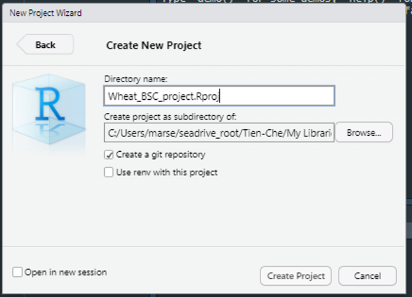
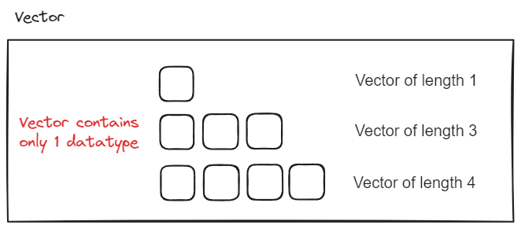

variable
# assignment str"v" to name "variable"
## "" and unquote str and variable
variable <- "v"
Variable <- 1
variable +1
Variable +1 Week1: R studio and vector
R-project
data type
vector
Welcome to the first course! During the following 2 hrs, you will learn data type of vectors, function and %>%.
Note
- set up working directory and name space
- vector and 4 basic data types: (“chr”,“numeric”,“logical”,“Date”)
- functions, documentation and data type check
- meaning of
%>%and. - indexing with pattern matching
1 Set up your working directory
1.1 preparation
Please make sure you have installed
R & Rstudio.File -> New Project ->
Wheat_BSC_project.Rproj

### your first R script
Press Ctrl+ Shift +Nto open new script.Save it as Week1_practice.R Copy code from this website to your script and press run.
1.2 Concept of datatype & name space:
Don’t overwrite
variable namesin name space (what already exists in system).- eg.,
var,mean,aov, etc.
- eg.,
Warning
avoid something that will show in the drop down menu of auto-completion.

Separate long
variable nameswith_.- eg.,
thermal_time,mean_yield, etc.
- eg.,
Don’t start
variable nameswith number.
| Bad | Better | |
|---|---|---|
3years |
three_years |
|
1225measurement |
measurement_1225 |
|
13genotypes |
genotypes_13 |

Variable = variable names + object 
2 Data type is everything
2.1 Always check your data type first!
# str??
str
?str
str(variable)
str(Variable)
# data type coersion
str(NA)
str(c(NA,1))
str(c(NA,"a"))
str(c(NA,TRUE))
str(c(1,"a"))2.2 Date
as.Date("2023-04-17")
as.Date("2023-04-17",format="%Y-%m-%d")
# is ther any error?
as.Date("20230417")
as.Date("17042023")
# additive properties of Date
as.Date("2023-04-17")-7
as.Date("2023-04-17")+23 Function: something ends with ()

# example: fun(object)
c(1,2,3)
mean(c(1,2,3))
str(TRUE)
seq(1,5,1)Since type Date is additive, how to create successive date vector of length 5? Vector date start with “2023-04-17”
Could you do the average of this vector?
[1] "2023-04-17" "2023-04-18" "2023-04-19" "2023-04-20" "2023-04-21"3.1 separate individual function from nested functions with %>%
Pipe (%>%) is available in r-package either dplyr or magrittr.
Please use %>% to avoid embedded functions.
.stands for the result from the left side of the pipe.
For long line code, press enter after each %>%.
Select all the codes by ctrl A.
Indent the selected codes by ctrl I.
Concepts of using pipe
# syntax of using pipe
fun1(object)
object %>% fun1(.)
object %>% fun1()
object %>% fun1() %>% .
object %>% fun1(.) %>% .
#embedded functions
fun2(fun1(object))
# pipe
object %>%
fun1() %>%
fun2()Examples of using pipe
# how many ways of creating a sequence?
c(1,2,3)
seq(1,3,1)
# embedded function : fun2(fun1())
length(c(1,2,3))
# use pipe, "." is the result of previous step
c(1,2,3) %>% length(.)
# replicate element as vector
rep(1,3)
# remove duplicates
rep(1,3) %>% unique()
# cumulative sum
rep(1,3) %>% cumsum()
# is there any difference?
paste(c("a","1"),collapse = "")
paste0(c("a","1"))
paste0("a","1")Use str() to check the data type of above line.
You have two vectors, c("a","b") and c("1","2")
How to use paste and repto create sequence of char vector shown below?
Check the arguments of rep to get more hints. e.g.,
rep(c("a","b"),each=2)
rep(c("a","b"),times=2)
[1] "a1" "a2" "b1" "b2"[1] "a1" "b1" "a2" "b2"3.2 write your first function
format: function_name(argument1, argument2) {code} example:
plusone <- function(x){
x+1
}
# is function data type sensitive?
plusone(variable)
plusone(Variable) function with good documentation example:
function_name <-function(input){
# input: datatype, length, meaning.
# output: datatype, length, meaning.
# action1: intermediate_variable <- input %>% fun1()
# action2: output <-intermediate_variable%>% fun2()
...
return(output)
}write a function with documentation: input vec is a numeric vector with length 3, return str of average value of vec ± standard deviation of vec.
Visualize the step in your function by first writing your the possible steps in text!
4 r packages : collection of functions
Check this great package tidyverse!
- Note that windows user may need to first download the Rtools that match your R version.
You can check your R version by typing version() in your R console.
install.packages(tidyrverse)
install.packages("tidyrverse")
library(dplyr)5 Pattern matching: logical vector and its position

# check if pattern exist in vector
3%in%c(1,3)
2%in%c(1,3)
1==2
!1==2
1!=2
c(1,3)==2
which(c(1,3)==3)
# what will be the difference?
order(c(3,1,2))
c(3,1,2) %>% .[order(.)]
# what will be the data type? check with str()
c(1,2,NA) %>% is.na()
c(1,2,NA) %>% is.na() %>% which()
c(1,2,NA) %>% is.na() %>% !.
c(1,2,NA) %>% !is.na()
!is.na(c(1,2,NA))
# check if data type match
arg <- ""
is.character(arg)
if(is.character(arg)){
print("character")
}
if(is.character(arg)){
print("character")
}else{
error("type other than character")
}
if(is.character(arg)){
warning("wrong")
}
if(is.character(arg)){
stop("wrong")
}Inside your plusone function, please check first whether input x is numeric, then proceed the process.
if not, return with message “wrong input type” using stop()